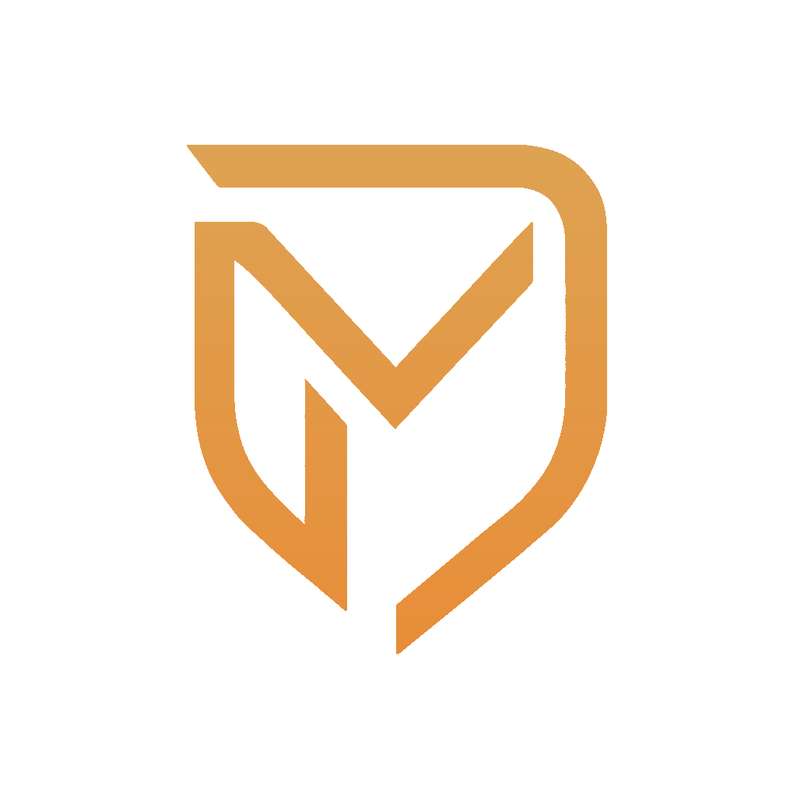

<header
  class="fixed left-1/2 z-50 max-w-[1280px] -translate-x-1/2 overflow-visible transition-all duration-300 ease-[cubic-bezier(0.4,0,0.2,1)]"
  [class]="isScrolled ? 'top-1 w-[calc(100%-0.5rem)] md:top-2 md:w-[calc(100%-1rem)]' : 'top-2 w-[calc(100%-1rem)] md:top-4 md:w-[calc(100%-2rem)]'">
  <div
    class="flex items-center justify-between rounded-xl border border-white/15 bg-black/50 px-4 py-2 shadow-[0_4px_24px_0_rgba(0,0,0,0.4),0_0_0_1px_rgba(255,255,255,0.08)_inset] backdrop-blur-[24px] backdrop-saturate-[180%] transition-all duration-300 ease-[cubic-bezier(0.4,0,0.2,1)] hover:border-orange-500/40 hover:shadow-[0_6px_32px_0_rgba(0,0,0,0.5),0_0_0_1px_rgba(255,255,255,0.12)_inset] md:px-5"
    [class]="isScrolled ? 'py-2' : 'py-2.5 md:py-2.5'">
    <!-- Logo/Name: Meet Patel -->
    <a routerLink="/"
      class="flex cursor-pointer items-center rounded-lg p-0.5 transition-all duration-300 ease-[cubic-bezier(0.4,0,0.2,1)] hover:scale-105 hover:drop-shadow-[0_0_8px_rgba(255,140,0,0.5)]">
      
    </a>

    <!-- Navigation Links -->
    <nav class="hidden items-center gap-6 md:flex md:gap-8">
      @for(route of navbarRoute; track $index) {
      @if (route.isRouterLink) {
      <a [routerLink]="route.route"
        class="nav-link-underline group relative cursor-pointer overflow-hidden py-1.5 text-[0.8125rem] font-medium text-white/85 transition-all duration-300 ease-[cubic-bezier(0.4,0,0.2,1)] hover:-translate-y-0.5 hover:text-orange-500 active:translate-y-0">
        {{route.label}}
      </a>
      } @else {
      <a (click)="smoothScrollTo(route.route, $event)"
        class="nav-link-underline group relative cursor-pointer overflow-hidden py-1.5 text-[0.8125rem] font-medium text-white/85 transition-all duration-300 ease-[cubic-bezier(0.4,0,0.2,1)] hover:-translate-y-0.5 hover:text-orange-500 active:translate-y-0">
        {{route.label}}
      </a>
      }
      }
    </nav>

    <!-- Desktop Theme Toggle & Mobile Menu Button -->
    <div class="flex items-center gap-4">
      <!-- Desktop Theme Toggle -->
      <button
        class="hidden items-center justify-center rounded-lg border border-white/20 bg-white/12 p-1.5 text-white/95 backdrop-blur-[10px] transition-all duration-300 ease-[cubic-bezier(0.4,0,0.2,1)] hover:-translate-y-0.5 hover:scale-105 hover:border-orange-500/40 hover:bg-orange-500/20 hover:shadow-[0_4px_12px_rgba(255,140,0,0.3)] active:translate-y-0 active:scale-100 md:flex"
        aria-label="Toggle Dark/Light Mode" (click)="toggleTheme()">
        @if (systemTheme == 'dark') {
        <!-- Sun Icon for Light Mode -->
        <svg class="h-6 w-6" fill="none" stroke="currentColor" viewBox="0 0 24 24">
          <path stroke-linecap="round" stroke-linejoin="round" stroke-width="2"
            d="M12 3v1m0 16v1m9-9h-1M4 12H3m15.364 6.364l-.707-.707M6.343 6.343l-.707-.707m12.728 0l-.707.707M6.343 17.657l-.707.707M16 12a4 4 0 11-8 0 4 4 0 018 0z">
          </path>
        </svg>
        } @else {
        <!-- Moon Icon for Dark Mode -->
        <svg class="h-6 w-6" fill="none" stroke="currentColor" viewBox="0 0 24 24">
          <path stroke-linecap="round" stroke-linejoin="round" stroke-width="2"
            d="M20.354 15.354A9 9 0 018.646 3.646 9.003 9.003 0 0012 21a9.003 9.003 0 008.354-5.646z">
          </path>
        </svg>
        }
      </button>

      <!-- Mobile Menu Button -->
      <button id="mobile-menu-toggle"
        class="z-[10000] flex items-center justify-center rounded-lg border border-white/20 bg-white/12 p-1.5 text-white/95 backdrop-blur-[10px] transition-all duration-300 ease-[cubic-bezier(0.4,0,0.2,1)] hover:scale-110 hover:border-orange-500/40 hover:bg-orange-500/20 hover:shadow-[0_4px_12px_rgba(255,140,0,0.3)] active:scale-95 md:hidden"
        aria-label="Toggle Mobile Menu" (click)="toggleMobileMenu()">
        @if (isMobileMenuOpen) {
        <!-- Close Icon -->
        <svg class="h-6 w-6 transition-transform duration-300 ease-[cubic-bezier(0.4,0,0.2,1)]" fill="none"
          stroke="currentColor" viewBox="0 0 24 24">
          <path stroke-linecap="round" stroke-linejoin="round" stroke-width="2" d="M6 18L18 6M6 6l12 12"></path>
        </svg>
        } @else {
        <!-- Hamburger Icon -->
        <svg class="h-6 w-6 transition-transform duration-300 ease-[cubic-bezier(0.4,0,0.2,1)]" fill="none"
          stroke="currentColor" viewBox="0 0 24 24">
          <path stroke-linecap="round" stroke-linejoin="round" stroke-width="2" d="M4 6h16M4 12h16M4 18h16"></path>
        </svg>
        }
      </button>
    </div>
  </div>

  <!-- Mobile Menu -->
  <div id="mobile-menu"
    class="fixed inset-0 z-[9999] flex h-[100dvh] w-screen flex-col items-center justify-start overflow-x-hidden overflow-y-auto overscroll-contain bg-black/96 backdrop-blur-[40px] transition-all duration-[400ms] ease-[cubic-bezier(0.4,0,0.2,1)]"
    [class.opacity-0]="!isMobileMenuOpen" [class.invisible]="!isMobileMenuOpen"
    [class.pointer-events-none]="!isMobileMenuOpen" [class.opacity-100]="isMobileMenuOpen"
    [class.visible]="isMobileMenuOpen" [class.pointer-events-auto]="isMobileMenuOpen">
    <div
      class="relative z-10 flex w-full max-w-[400px] flex-col items-center justify-start gap-6 rounded-lg p-0 pointer-events-auto shrink-0 min-h-min box-border px-6 pt-20 pb-12 sm:px-8 sm:pt-24"
      [class.opacity-0]="!isMobileMenuOpen" [class.translate-y-5]="!isMobileMenuOpen"
      [class.opacity-100]="isMobileMenuOpen" [class.translate-y-0]="isMobileMenuOpen"
      [class.animate-slide-in-up]="isMobileMenuOpen" [style.animation-delay]="isMobileMenuOpen ? '0.1s' : '0s'">
      <a (click)="smoothScrollTo('#about', $event)"
        class="mobile-menu-link-shimmer relative w-full max-w-[280px] min-w-[180px] cursor-pointer overflow-hidden rounded-xl border border-white/20 bg-white/12 px-5 py-3 text-center text-base font-semibold text-white/95 backdrop-blur-[10px] transition-all duration-300 ease-[cubic-bezier(0.4,0,0.2,1)] hover:scale-105 hover:-translate-y-0.5 hover:border-orange-500/40 hover:bg-orange-500/20 hover:text-orange-500 hover:shadow-[0_8px_20px_rgba(255,140,0,0.3)] active:scale-100 active:translate-y-0 sm:px-7 sm:py-3.5 sm:text-lg">
        About
      </a>
      <a (click)="smoothScrollTo('#skills', $event)"
        class="mobile-menu-link-shimmer relative w-full max-w-[280px] min-w-[180px] cursor-pointer overflow-hidden rounded-xl border border-white/20 bg-white/12 px-5 py-3 text-center text-base font-semibold text-white/95 backdrop-blur-[10px] transition-all duration-300 ease-[cubic-bezier(0.4,0,0.2,1)] hover:scale-105 hover:-translate-y-0.5 hover:border-orange-500/40 hover:bg-orange-500/20 hover:text-orange-500 hover:shadow-[0_8px_20px_rgba(255,140,0,0.3)] active:scale-100 active:translate-y-0 sm:px-7 sm:py-3.5 sm:text-lg">
        Skills
      </a>
      <a (click)="smoothScrollTo('#work', $event)"
        class="mobile-menu-link-shimmer relative w-full max-w-[280px] min-w-[180px] cursor-pointer overflow-hidden rounded-xl border border-white/20 bg-white/12 px-5 py-3 text-center text-base font-semibold text-white/95 backdrop-blur-[10px] transition-all duration-300 ease-[cubic-bezier(0.4,0,0.2,1)] hover:scale-105 hover:-translate-y-0.5 hover:border-orange-500/40 hover:bg-orange-500/20 hover:text-orange-500 hover:shadow-[0_8px_20px_rgba(255,140,0,0.3)] active:scale-100 active:translate-y-0 sm:px-7 sm:py-3.5 sm:text-lg">
        Work
      </a>
      <a routerLink="/blog" (click)="closeMobileMenu()"
        class="mobile-menu-link-shimmer relative w-full max-w-[280px] min-w-[180px] cursor-pointer overflow-hidden rounded-xl border border-white/20 bg-white/12 px-5 py-3 text-center text-base font-semibold text-white/95 backdrop-blur-[10px] transition-all duration-300 ease-[cubic-bezier(0.4,0,0.2,1)] hover:scale-105 hover:-translate-y-0.5 hover:border-orange-500/40 hover:bg-orange-500/20 hover:text-orange-500 hover:shadow-[0_8px_20px_rgba(255,140,0,0.3)] active:scale-100 active:translate-y-0 sm:px-7 sm:py-3.5 sm:text-lg">
        Blog
      </a>
      <!-- <a (click)="smoothScrollTo('#projects', $event)"
        class="mobile-menu-link-shimmer relative w-full max-w-[280px] min-w-[180px] cursor-pointer overflow-hidden rounded-xl border border-white/20 bg-white/12 px-5 py-3 text-center text-base font-semibold text-white/95 backdrop-blur-[10px] transition-all duration-300 ease-[cubic-bezier(0.4,0,0.2,1)] hover:scale-105 hover:-translate-y-0.5 hover:border-orange-500/40 hover:bg-orange-500/20 hover:text-orange-500 hover:shadow-[0_8px_20px_rgba(255,140,0,0.3)] active:scale-100 active:translate-y-0 sm:px-7 sm:py-3.5 sm:text-lg">
        Projects
      </a> -->
      <a (click)="smoothScrollTo('#contact', $event)"
        class="mobile-menu-link-shimmer relative w-full max-w-[280px] min-w-[180px] cursor-pointer overflow-hidden rounded-xl border border-white/20 bg-white/12 px-5 py-3 text-center text-base font-semibold text-white/95 backdrop-blur-[10px] transition-all duration-300 ease-[cubic-bezier(0.4,0,0.2,1)] hover:scale-105 hover:-translate-y-0.5 hover:border-orange-500/40 hover:bg-orange-500/20 hover:text-orange-500 hover:shadow-[0_8px_20px_rgba(255,140,0,0.3)] active:scale-100 active:translate-y-0 sm:px-7 sm:py-3.5 sm:text-lg">
        Contact
      </a>

      <button
        class="mt-4 flex items-center justify-center rounded-full border border-white/20 bg-white/12 p-3.5 text-white/95 backdrop-blur-[10px] transition-all duration-300 ease-[cubic-bezier(0.4,0,0.2,1)] hover:scale-110 hover:rotate-[15deg] hover:border-orange-500/40 hover:bg-orange-500/20 hover:shadow-[0_4px_12px_rgba(255,140,0,0.3)] active:scale-95 active:rotate-0"
        aria-label="Toggle Dark/Light Mode" (click)="toggleTheme()">
        @if (systemTheme == 'dark') {
        <svg class="h-6 w-6" fill="none" stroke="currentColor" viewBox="0 0 24 24">
          <path stroke-linecap="round" stroke-linejoin="round" stroke-width="2"
            d="M12 3v1m0 16v1m9-9h-1M4 12H3m15.364 6.364l-.707-.707M6.343 6.343l-.707-.707m12.728 0l-.707.707M6.343 17.657l-.707.707M16 12a4 4 0 11-8 0 4 4 0 018 0z">
          </path>
        </svg>
        } @else {
        <svg class="h-6 w-6" fill="none" stroke="currentColor" viewBox="0 0 24 24">
          <path stroke-linecap="round" stroke-linejoin="round" stroke-width="2"
            d="M20.354 15.354A9 9 0 018.646 3.646 9.003 9.003 0 0012 21a9.003 9.003 0 008.354-5.646z">
          </path>
        </svg>
        }
      </button>
    </div>
  </div>
</header>